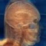
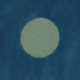
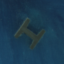

Female
|
|
|  | |||
| teem | / | nrrd | / |
Visible Female |
Cropping |
Supposing that we'd like to crop the slices so to only contain the head, we need to know where to crop. We can project through a small subset of the slices in order to see where the "footprint" of the head is, within the frame of the color images. One kind of projection which should work is simply maximum intensity projection, since any tissue will be brighter in red and green than the blue surrounding material. The subset of slices we'll use is *{0,5}a.raw.Z (every 15th slice), but only up to avf1215a, since that is where the shoulders begin:
ls -1 data/avf11?{0,5}a.raw.Z data/avf12{0,1}{0,5}a.raw.Z | wc -l
24
zcat data/avf11?{0,5}a.raw.Z data/avf12{0,1}{0,5}a.raw.Z \
| unu make -i - -t uchar -s 2048 1216 3 24 -e raw \
| unu project -a 3 -m max \
| unu permute -p 2 0 1 -o headmax.ppm
The resulting image (headmax.ppm) is as big as one of the slices; here's a downsampled version:
unu resample -i headmax.ppm -s = x0.3 x0.3 | topng doc/headmaxsm.png
By inspecting this image, a bound on the head was found with the help of xv (middle button gives pixel coordinates):
unu crop -i headmax.ppm -min 0 771 271 -max M 1319 945 \ | unu resample -k cubic:0,0.5 -s = x0.5 x0.5 \ | topng doc/headmaxcrop.png
Besides cropping down to the head, we would also like to see if there are any problems with spatial displacements between the images, which would create sharp edges in the data where none existed in the tissue. This is facilitated with the fiducial markers which appear in every slice. Inspection of individual slices (with the commands shown earlier) determined 80x80 pixel windows which bound the circle marker, and the I-beam marker on the opposite side of the slice. Here they are for slice avf1130a:
zcat data/avf1130a.raw.Z \ | unu make -i - -t uchar -s 2048 1216 3 -e raw \ | unu permute -p 2 0 1 -o tmp.ppm unu crop -i tmp.ppm -min 0 365 945 -max M m+79 m+79 \ | topng doc/circle.png unu crop -i tmp.ppm -min 0 1660 950 -max M m+79 m+79 \ | topng doc/ibeam.png
|  |  |
| circle.png | ibeam.png |
foreach SLC ( `(cd data; echo avf*.raw.Z)` )
echo $SLC
zcat data/$SLC \
| unu make -i - -t uchar -s 2048 1216 3 -l X Y RGB -e raw \
| unu permute -p 2 0 1 -o tmp.ppm
unu crop -i tmp.ppm -min 0 365 945 -max M m+79 m+79 -o $SLC.circle.ppm
unu crop -i tmp.ppm -min 0 1660 950 -max M m+79 m+79 -o $SLC.ibeam.ppm
unu crop -i tmp.ppm -min 0 771 271 -max M 1319 945 -o $SLC.head.ppm
unu resample -i $SLC.head.ppm -k tent -s = x0.5 x0.5 -o $SLC.headsm.ppm
end
One useful aspect of the NRRD writer is that when it writes PPM images, it stores information for the NRRD headers in PPM comments. Since the NRRD file format can contain many different fields, its handy to have them stored in non-NRRD files. It is easy to read these headers, too. Instead of using head to look at the PPM header (and risk clobbering your terminal settings with bizarro binary data), use unu head:
The content field shows that this image is the result of permuting and then cropping some original array, and there is enough information here to recreate the result. The labels field shows what became of the information originally given to unu make's "-l" option.unu save -i avf1130a.raw.Z.head.ppm -f nrrd | unu head - NRRD0001 content: crop(permute(???,2,0,1),[0,2]x[771,1319]x[271,945]) type: unsigned char dimension: 3 sizes: 3 549 675 labels: "RGB" "X" "Y" encoding: raw